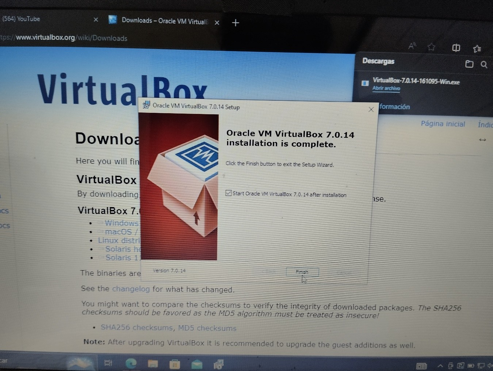
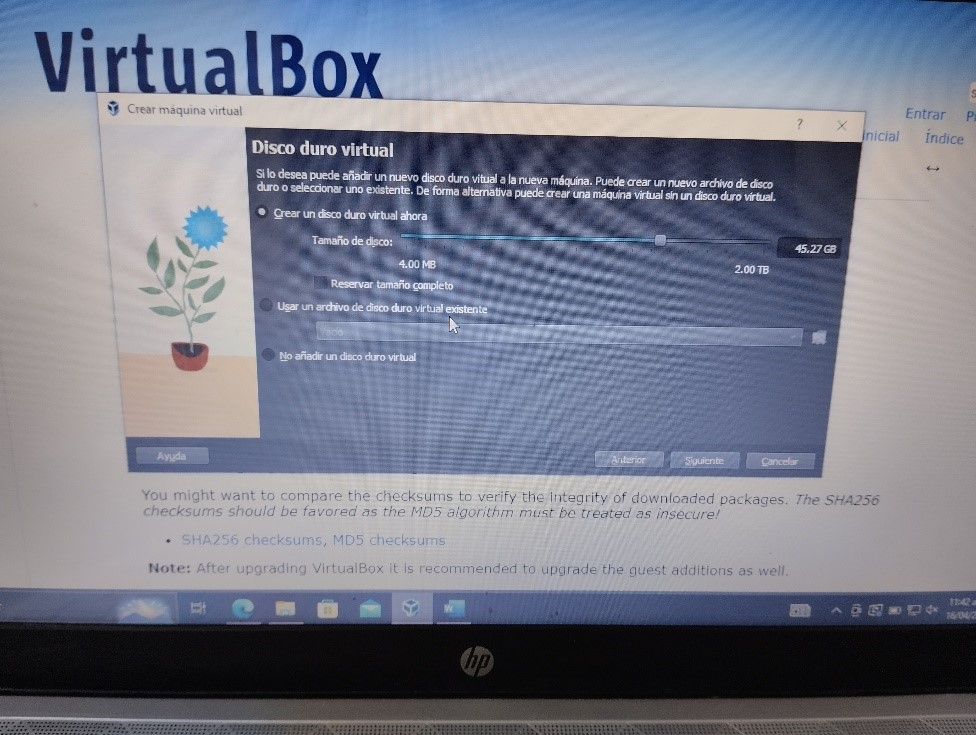
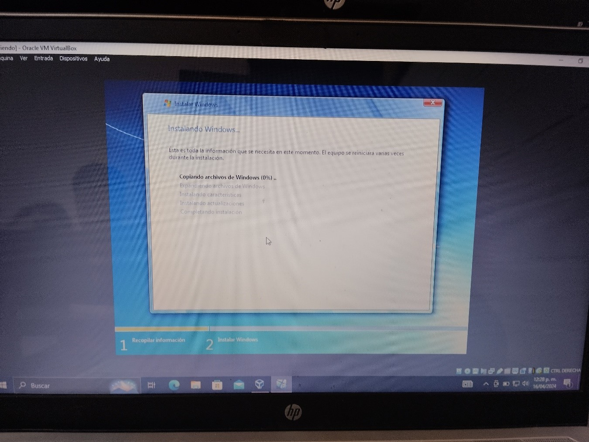
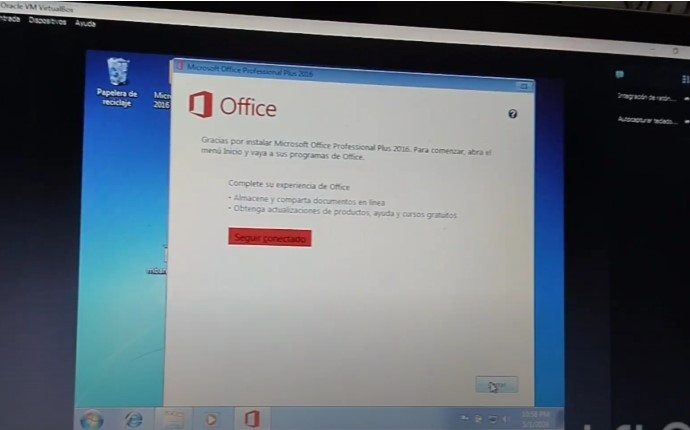
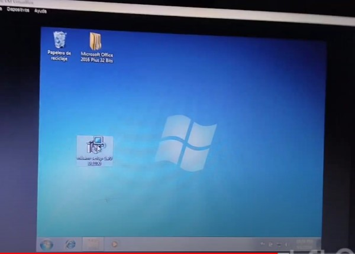
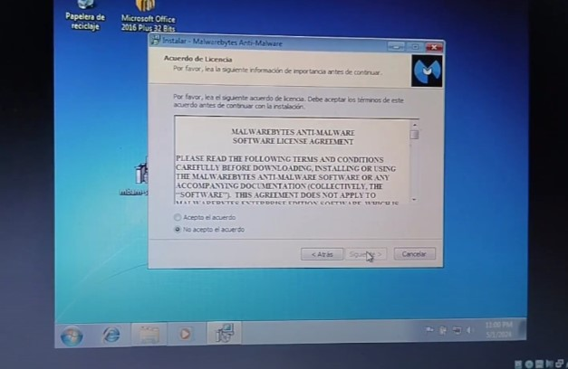
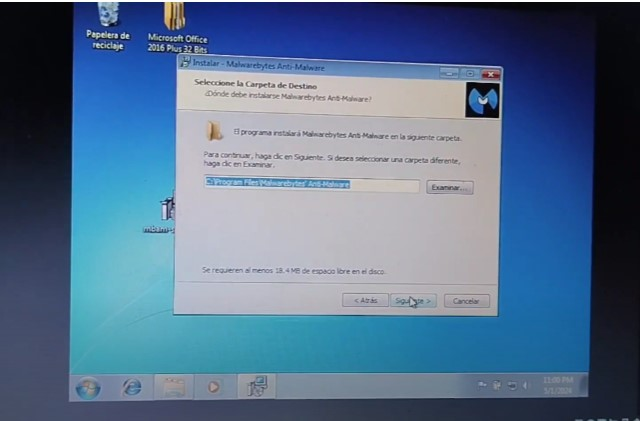
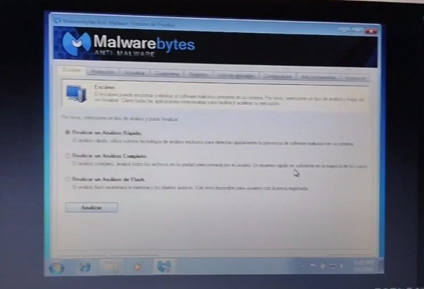
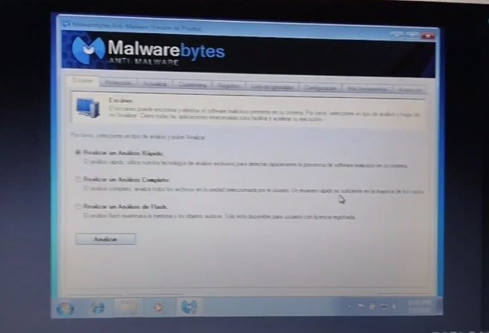

Introducción
Una máquina virtual es la forma que tenemos de aprovechar recursos de otros sistemas operativos sin la necesidad de particionar el disco de almacenamiento. Esto se logra gracias a una utilería que nos brinda esta ventaja.
Información
La virtualización crea un entorno informático simulado, o virtual, en lugar de un entorno físico. A menudo, incluye versiones de hardware, sistemas operativos, dispositivos de almacenamiento, etc., generadas por un equipo. Esto permite a las organizaciones particionar un equipo o servidor físico en varias máquinas virtuales. Cada máquina virtual puede interactuar de forma independiente y ejecutar sistemas operativos o aplicaciones diferentes mientras comparten los recursos de una sola máquina host.
Los sistemas operativos se virtualizan en el kernel, es decir, en sus administradores centrales de tareas. Es una forma útil de ejecutar los entornos de Linux y Windows de manera paralela. Las empresas también pueden insertar sistemas operativos virtuales en las computadoras, lo cual:
- Reduce los grandes gastos en sistemas de hardware, ya que las computadoras no requieren funciones tan inmediatas.
- Aumenta la seguridad porque todas las instancias virtuales se pueden supervisar y aislar.
- Limita el tiempo que se destina a los servicios de TI, como las actualizaciones de software.
En este caso se usó VirtualBox, una de las utilerías o herramientas más usadas en virtualización. Gracias a su popularidad, ofrece una amplia disponibilidad de información y un soporte de actualizaciones constante. Esto facilita la identificación y resolución de problemas, agilizando el proceso de uso y mantenimiento de las máquinas virtuales.
Cómo hacer una virtualización usando VirtualBox
Descargamos virtualbox

Iniciamos el instalador

Aceptamos tos los términos y condiciones y damos a finalizar
Abrimos y le damos a crear nueva.

Le damos un nombre a la maquina para identificarla y importamos la imagen iso del sistema a instalar.

Le damos un nombre de usuario y contraseña a la maquina.

Le damos los requisitos necesarios para la instalación, ram, almacenamiento, nucleos lógicos y acepatamos que todo es correcto.


Después solo esperamos a que la maquina se instale como se aria normalmente ya tendiriamos instalado una maquina virtual.



Como paso siguiente instalamos office usando un instalador libre.


Aceptamos los teminos y condiciones.

Seleccionamos instalar ahora

Cerramos y nos aseguramos de que si este instalado.

Proseguimos con la instalación de el antivirus en este caos malwarebytes.
Abrimos el instalador.
Le damos permiso para realizar cambios a el equipo.

Seleccionamos idioma

Aceptamos los términos y condiciones.
Seleccionamos el lugar de instalación.
Le damos a listo para instalar.

Finalizamos la instalación y nos aseguramos de que este funcionando correctamente.
 

CONCLUSION
Una máquina virtual nos sirve para poder usar varios tipos de sistemas operativos o probarlos sin la necesidad de hacer múltiples particiones en un disco, simplemente usando los recursos de nuestro pc, asique es muy útil para poder usar características de otros sistemas operativos sin la necesidad de resetear un dispositivo.
Al realizar la actividad me tope con unos cuantos inconvenientes, ya que la maquina usad no es muy potente esta se trabo un poco al momento de la instalación, incluso iba un poco mas lento, también al momento de instalar utilerías como office y un antivirus se trabo bastante, peor se logro solucionar de forma rápida.